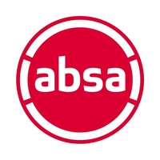

// Senior Software Engineer · Systems · Trade-offs · Developer Experience Engineer
Matthew_Law
I've spent over ten years building software and learning that making something work is only the beginning. The harder questions tend to show up afterwards: what happens when it changes, scales, breaks, or lands with someone who wasn't there when it was designed?
Mostly .NET and TypeScript, across fintech, banking and stock exchanges. I usually end up in the cross-cutting problems: the decisions and trade-offs that don't belong neatly to a single ticket, system, or person. And mentoring the people around me through them, whether or not that's my title.
Most of the expensive problems didn't look expensive at the time.
The ones that stuck with me are written down.
Scratchpad()
A decade of git commits and perspective shifts.
Latest
If You Skip the Reasoning, You Skip What It Teaches
The endpoints were protected. He knew the how. He didn't know the why.
// LESSON: an answer you can't defend isn't understanding, it's just something that happened to work.
We Were Waiting for Green. Green Was Never Coming.
We lost days to a container that was failing exactly as intended. Nobody had written down what working looked like.
// LESSON: write things down while they're still confusing, before they look obvious
Experience()
Entelect
// Jun 2022 – Present · 2 rolesSenior Software Engineer
- - Own the multi-tenant plugin architecture. Each tenant has an explicit registered list of what it is allowed to load, rather than the loader accepting anything that implements the right interface.
- - Led a team of four on a platform modernisation, planning and running an Angular 11 to 20 upgrade and pushing for real unit test coverage as part of it.
- - Called a stop at the last LTS rather than the newest release. Several packages had no support past it, and handing the client back something stable mattered more than reaching 20.
- - Joined a new project and spent the wait for access and onboarding fixing pain points in the existing CI/CD pipeline.
- - Build and maintain shared NuGet and npm libraries so teams are not each solving the same problem a slightly different way.
- - Mentor engineers through code reviews and technical guidance, and hold the cross-cutting technical decisions in client engagements.
Intermediate Software Engineer
- - Brought fintech auth and OWASP experience to teams that had not worked in heavily regulated environments.
- - Led a small team building a shared auth package. Other departments at the client have since adopted it.
- - Contributed to the multi-tenant platform and the early iterations of its plugin-based architecture.
- - Refactored legacy codebases as part of ongoing modernisation, focused on what would still be maintainable once the team handed it over.
Dariel
// Mar 2020 – May 2022 · 2 rolesMentor
- - Ran weekly after-hours mentoring sessions with juniors. Opted into rather than assigned.
- - Worked through best practices, pointed people at material, and helped a few of them finish personal projects they had wanted to build.
- - Learned to give feedback without taking ownership of the problem away from the person holding it.
Software Developer
- - Pushed back when a senior stakeholder wanted to bring in technology that cost more sprint capacity than it returned. Never a flat no: the reasoning went into the technical discussions, so everyone could see what it would push out of the release.
- - Built APIs and integrations against external systems across several client projects, usually joining the codebase cold and at short notice.
Securities & Trading Technology
// Dec 2015 – Feb 2020 · 2 rolesIntermediate Software Developer
- - Client's reporting engine ran user-uploaded SQL as raw text. Argued for validation on upload, with anything containing UPDATE, DELETE or INSERT forced into a maker-checker review by a second person at the client. It slowed down quick ad hoc reporting, which was the price of nobody running a destructive 'report'.
- - Pushed the team to replace hardcoded values (such as VAT) scattered through the codebase with a single centralised constant. It cost an extensive audit to find them all. When the rate changed, it was a one-file change.
- - Worked on market data and custodial platforms running in live financial operations.
Junior Software Developer
- - Built BBO and custodial solutions for the ZAR X environment, which went live in February 2017.
- - Contributed to the internal frameworks the team's financial systems were built on.
Credentials()
Curated selection of certifications and professional credentials.
Claude Certified Developer - Foundations
Issued by Anthropic
Sep 21, 2026
MCSD: App Builder
Issued by Microsoft
Sep 26, 2016
Clientele()
JSE
Built and maintained the integrations between custodial and broker back-office systems.

Absa
Integration work inside Corporate and Investment Banking, mostly on the parts corporate clients actually touch.
Computicket
Helped introduce a microservices architecture, and worked with the internal teams through adopting it.
Standard Bank
Built integrations in the CIB space, against financial workflows with a lot of moving parts.
LibFin/Liberty
On the modernisation team for core platforms: performance, security posture, and the CI/CD pipelines.
Motus
Integration and performance work on the enterprise platform, alongside the business teams using it.
Hobbies()
Side_Projects()
Simple.Interpreter
A C# expression interpreter, packaged for NuGet. Lets the people using your software define their own business rules, conditional logic and filters at runtime, so changing one is not a recompile and a redeploy.
Query
A library for running MySQL commands, written before EF was 'big'. Uses reflection to map the results onto whatever type you ask for.
profile
The source behind this site, including the build pipeline that turns a Markdown file into a Scratchpad post.